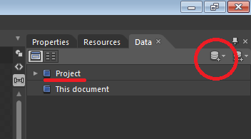

Windows Phone Development for People in a Hurry
Data Binding
For a summary of what Data Binding is see MVVM for people in a hurry
DataContext
- A good practice is to define XAML Bindings by the property that they mirror. The object this property refers to is determined by the 'DataContext'
- Properly defining the DataContext allows a fake View-Model object to be bound to at design-time (i.e. when working in Blend) and the actual View-Model object to be loaded at runtime
Establishing the Design-Time data context
- With a phone page loaded up, In the 'Data' tab to the right of Blend click the icon circled below and select 'Create Sample Data'
untick 'Enable sample data when the application is running' and accept
- Now the following line appears in App.xaml
and a new folder appears in the project<SampleData:SampleDataSource x:Key="SampleDataSource" d:IsDataSource="True"/> - In the XAML for you phone page, insert the following line in the
phoneelement underneath all the namespace declarations to create a DataContext for the entire page,d:DataContext="{StaticResource SampleDataSource}" - Because of the line
mc:Ignorable="d"in the phone element, all attributes and elements in thed:namespace are ignored at runtime - You can build out the sample data to match your View-Model class by using the editor launched from the 'Data' tab under 'Project' (underlined in the above figure)
Establishing the run-time data context
- In the constructor of the code-behind for you phone page insert the line,
this.DataContext = App.VM; - If you have instantiated your View-Model instance in App.xaml.cs as recommended, then this will assign the page DataContext at runtime to the actual ViewModel instance
Binding
- The easiest way to bind elements is in Blend and is far better demonstrated than described, watch this video for an introduction on how to use Blend to bind elements
- the absolute basics however are described here
<TextBlock Text="{Binding Name}" />means that the Text attribute of the TextBlock is bound to the Name property on the ViewModel instance.
Two-way binding
<TextBox Text="{Binding Name, Mode=TwoWay}" />is similar but now the UI can write to the ViewModel property as well as read from it.
Binding via a Convertor
Some attributes require UI specific values. e.g. the Visibility attribute requires the bound data type to be a Visibility enum which is specific to XAML. We might want to convert our app to HTML and so would prefer a plain boolean on the View-Model. This is solved with Converters. These are classes that live in the Converter.cs file in the View folder that intercept the code between the bound property and the XAML attribute.
In the phone:PhoneApplicationPage.Resources element,
<My_ViewNamespace:BoolToStrings x:Key="BoolToVisibilityConverter"/>then the actual binding,
<Canvas Visibility="{Binding IsProtected, Convertor=BoolToVisibilityConverter}" />This passes the value of the IsProtected property through the BoolToVisibilityConverter class before showing in the UI. Converter classes implement the IValueConverter interface like below,
public class BoolToVisibilityConverter : System.Windows.Data.IValueConverter
{
public object Convert(object value, Type targetType, object parameter, CultureInfo cultureInfo)
{
if ((bool)value)
{
return Visibility.Visible;
}
else
{
return Visibility.Collapsed;
}
}
public object ConvertBack(object value, Type targetType, object parameter, CultureInfo cultureInfo)
{
return (Visibility)value == Visibility.Visible;
}
}